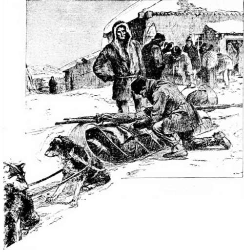

Hunting Musk-Ox With The Dog Ribs. Part 2
Description
This section is from the book "Hunting", by Archibald Rogers. Also available from Amazon: Hunting.
Hunting Musk-Ox With The Dog Ribs. Part 2
An hour later we started on the grand hunt, in which only the best men engaged, the women and children, of course, remaining at the camps in the woods. There were eleven Indians in the party, with two lodges, —Johnnie in charge of mine, with three other Indians. On the second day we traversed a long, narrow lake called Ten-endeatity. Early in the afternoon, from the summit of a lofty granite hill, I beheld the Barren Ground for the first time. Behind us lay the rugged hills, their slopes clothed with stunted pines, upon which a bright sun was shining. Before us were hills still more precipitous and barren, everywhere strewn with angular blocks of granite — a monotonous, dreary waste, from which a snow-storm was swiftly approaching. Half-acre patches of pines from one to three feet high still appeared for a few miles, but our lodge-poles were cut that day; these were trimmed down so slender that they would afford little fuel for the return trip; each sled carried four poles fourteen feet in length. The country was so rough that we only travelled thirty-five miles.
Ready to Start.
On the fourth day we encamped in a little clump of pines on the Coppermine River. The Dog Ribs called this stream Tson Ta. It takes its rise in a large lake called Ek-ah Ta, which is two days' journey in length. This was the last outlier of the timbered country, and henceforth fuel had to be carried on our sleds. The largest of the trees reached a height of twenty-five feet, with thick, twisted, and much-branched trunks. We left the Coppermine with our sleds loaded, as heavily as the dogs could haul, with wood, cut and split into billets of convenient size. What a luxury a good oil-stove would have been! As we were about to start, "Jimmy the Chief," who was leader of the band, and by far the most intelligent man among them, after a long look eastward, turned to me and said, "A-ye tetchiu touty, nit-zy nitchah, yazzy edsah." "This is the woodless country where the blizzards blow, and it is always cold." Then drawing his old gray blanket closer about his shoulders, and grasping his double-barrelled smoothbore, he set off at a rapid pace, the seven trains falling into line upon the track of his snow-shoes.
We followed the course of a small stream called Kwe-lond Ta for about forty miles, until we reached a lake at least thirty miles in length, called Yambahty.
On the seventh day I killed a male caribou, four or five years old, still bearing his antlers, though we are told that the bucks shed them early in December. Half the caribou still carried their antlers.
As we advanced that day the hills became more rolling, with gravel and pebbles, but fewer bowlders. Wherever the wind had swept the surface clear of snow, the reindeer moss (Cladonia rangiferina) and tufts of low grass appeared. Toward evening we passed a few old musk-ox tracks.
On the ninth day we traversed the largest lake seen north of the Great Slave Lake, which I think must have been the Cogead Lake of Hearne, and called by my companions Coahcachity. Away toward the northern end of the lake four or five peaks were visible. Two of these were lofty cones, standing pure white in their snow-mantles, identical in size and shape, with almost perpendicular sides.
We crossed two gravel ridges trending southeast and northwest, and again encountered the hills of naked granite strewn with great angular bowlders, which necessitated constant watchfulness to prevent our sleds from being broken.
These vehicles were the common birch flat sleds of the North, fifteen inches in width, and seven feet in length. They soon became grooved from end to end by the sharp points of rocks lying just below the surface of the snow, which ploughed across the bottom, ordinarily as smooth as glass, and made them much harder for the dogs to haul. Still Jimmy's old gray blanket led the way straight over the hills, never swerving from a northeast course. Sometimes we would ascend for an hour, and then go pell-mell down a steep incline for two or three hundred feet, holding back our sleds with all our strength, yet landing in the drifts at the bottom, with the sled-dog dragging under, and the rest of the team tangled in the harness.
The reindeer were now quite abundant, and we had little difficulty in killing enough for men and teams. My dogs were keen hunters, and were always ready to dash after the herds of gray-hued caribou, which swept over the snowy slopes like the shadows of swift-flying clouds. The only way that I could restrain them was to overturn the sled. In the evening, when they were released from the harness, they would pursue any caribou which might appear near our camp, which caused me considerable anxiety, as the dismal howl of the never-distant wolves gave warning of their certain fate if they left the camp. One of the giddies was lost in this way.
On the tenth day Johnnie, with three other Indians and myself, separated from the others, and turned a little more to the northward. We were now in what the Dog Ribs designated the Musk-ox Mountains. After running about ten miles, Esyuh, who was in advance, suddenly turned, and began to make frantic gestures. Over the hills, a mile away, appeared a black object, closely followed by another and another. No need for him to urge us to hasten forward, or to tell us what those huge rolling balls were. "Etjerrer! Tahy etjerrer!" Three musk-ox; and a few seconds later the dogs were all released and scattering out over the country, some in pursuit, some on the back track, and others trotting complacently along at their masters' heels. We followed as fast as we could run. Then it was that I discovered the advantage of having light clothing, light guns and ammunition. I was distanced by my companions, who killed the musk-ox after a run of three miles. As soon as the dogs reached them they turned to defend themselves, and fell an easy prey to the hunters, who were soon upon them. Our lodge was set up that night beside the fallen carcasses, and our teams for once had all they could eat. There were several hundred pounds of meat with fat two inches in thickness on the backs. Meat of excellent quality, without the faintest trace of musk perceptible. That from one of the animals was tender, and as well flavored as any venison that I ever ate. The others were tough; but the Dog Ribs preferred tough meat to walking a dozen yards to get that of a younger animal. The complexion of our diet was now changed: before, we had enjoyed caribou ribs boiled, garnished with handfuls of coarse gray hairs; now we had boiled ribs of musk-ox with hairs of a brownish black.
Continue to:
- prev: Hunting Musk-Ox With The Dog Ribs
- Table of Contents
- next: Hunting Musk-Ox With The Dog Ribs. Part 3